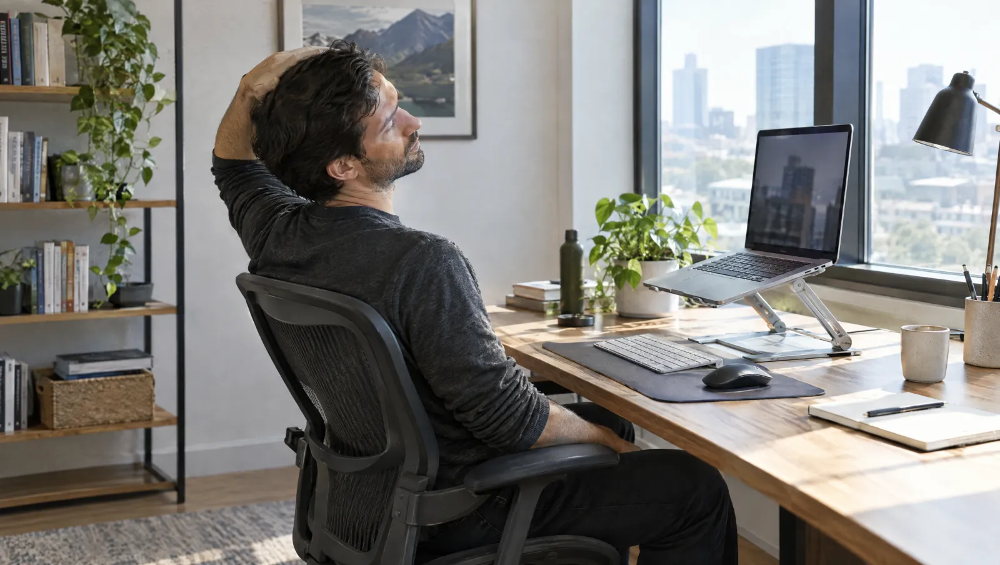

Kısaca
- Öne uzanan baş, boyun kaslarının yükünü artırır.
- Ekranın üst kenarı göz hizasında ya da biraz altında olmalı.
- Her 30-45 dakikada bir kısa mola verin.
- Çene içe çekme ve kürek kemiği sıkıştırma günlük rutine girebilir.
- Kola yayılan uyuşma ya da güç kaybında muayene olun.
Masa başında boyun ağrısı neden olur?
Masa başı boyun ağrısının en sık nedeni, başın saatlerce öne uzanmış hâlde kalmasıdır. Baş öne kaydıkça boyun ve omuz kaslarının taşıdığı yük artar. Bu kaslar yorulur, gerilir ve ağrı yapar. Sorun çoğu zaman kemikte değil, kaslarda ve uzun süre değişmeyen duruştadır.
Ekran çok alçakta ya da uzaktaysa kişi farkında olmadan ona doğru eğilir. Dizüstü bilgisayarla saatlerce çalışmak bu yüzden boynu masaüstü bilgisayara göre daha çok zorlar. Stres de omuzları kulaklara doğru kaldırır ve kasları gergin tutar. Hareketsiz kalan kaslarda kan dolaşımı yavaşlar. Sonuçta akşam saatlerinde ensede ve kürek kemikleri arasında yanma hissedilir.
Ekran, sandalye ve klavye nasıl ayarlanmalı?
Ekranın üst kenarı göz hizanızda ya da biraz altında olmalıdır. Ekranla aranızda yaklaşık bir kol boyu mesafe bırakın. Sandalyeyi ayaklarınız yere tam basacak ve dizleriniz kalçanızla aynı hizada kalacak biçimde ayarlayın. Klavyeyi kullanırken dirsekleriniz yaklaşık dik açıda durmalı, omuzlarınız ise gevşek kalmalı.
- Ekran
- Pencereyi yandan alacak şekilde yerleştirin. Yansıma, başınızı eğip bükmenize yol açar.
- Sandalye
- Sırtınızı arkalığa yaslayın. Bel çukurunu destekleyen küçük bir yastık ya da rulo havlu işe yarar.
- Klavye ve fare
- İkisini de masanın önüne, vücudunuza yakın tutun. Fareye uzanmak omzu öne çeker.
- Dizüstü bilgisayar
- Uzun çalışmalarda bir yükseltici ile ayrı klavye ve fare kullanın. Böylece ekran göz hizasına çıkar, eller masada kalır.
- Telefon
- Ahizeyi omzunuzla kulağınız arasına sıkıştırmayın. Sık görüşme yapıyorsanız kulaklık kullanın.
Gün içinde hangi egzersizler yapılabilir?
Gün içinde birkaç kez yapılan kısa germe ve güçlendirme hareketleri boyun kaslarındaki gerginliği azaltır. Aşağıdaki egzersizlerin tamamı masanızda, beş dakika içinde yapılabilir. Hareketleri yavaş ve kontrollü yapın; ağrı sınırını zorlamayın. Hafif bir gerilme hissi beklenir, keskin ağrı ise durmanız gerektiğini gösterir.
| Egzersiz | Nasıl yapılır? | Tekrar |
|---|---|---|
| Çene içe çekme | Dik oturun, başınızı eğmeden çenenizi düz bir çizgide geriye kaydırın | 10 kez, her birinde 5 saniye bekleyin |
| Yana eğme germesi | Sağ elinizle sandalyenin kenarını tutun, başınızı yavaşça sola eğin | Her iki yana 20-30 saniye, 2 kez |
| Kürek kemiği sıkıştırma | Omuzlarınızı geriye ve aşağıya çekin, kürek kemiklerinizi birbirine yaklaştırın | 10 kez, 5 saniye bekleyin |
| Omuz çevirme | Omuzlarınızı kulaklarınıza doğru kaldırın, geriye ve aşağıya doğru daire çizin | 10 kez |
| Kapı aralığında göğüs germesi | Ön kollarınızı kapı kasasına dayayın, bir adım öne çıkarak göğsünüzü esnetin | 20-30 saniye, 2 kez |
| Başı sağa sola çevirme | Omuzlarınızı sabit tutarak başınızı ağrı olmayan sınıra kadar yavaşça çevirin | Her yöne 5 kez |
Molaları iş gününe nasıl yerleştirebilirsiniz?
Kısa ve sık molalar, gün sonunda yapılan uzun bir egzersiz kadar önemlidir. Her 30-45 dakikada bir ayağa kalkmayı ve birkaç dakika hareket etmeyi hedefleyin. Bu molaları hatırlamak zor olabilir; telefonunuza ya da bilgisayarınıza bir hatırlatıcı kurmak işinizi kolaylaştırır. Gözleriniz de bu aralardan yararlanır.
- İşe başlarken omuz çevirme ve çene içe çekme hareketleriyle kaslarınızı ısıtın.
- Her 20 dakikada bir, 20 saniye boyunca 6 metre uzaktaki bir noktaya bakın.
- Her 30-45 dakikada bir kalkın; su almaya ya da pencereye kadar yürüyün.
- Öğle arasında 10-15 dakikalık bir yürüyüş yapın.
- Telefon görüşmelerini mümkünse ayakta yapın.
- Gün sonunda yana eğme ve göğüs germesiyle günü kapatın.
Hangi belirtiler muayene gerektirir?
Boyun ağrısı kola yayılıyor ve elde uyuşma ya da güç kaybı yapıyorsa muayene gerekir. Birkaç hafta içinde geçmeyen, gece uykudan uyandıran ya da giderek artan ağrı da hekime gösterilmelidir. Ellerde beceriksizlik ve yürürken dengesizlik de dikkat ister. Bu belirtiler sinir sıkışması gibi kas yorgunluğu dışındaki nedenlere işaret edebilir.
Trafik kazası ya da düşme sonrası boyun ağrısı başladıysa boynunuzu hareket ettirmeyin. Hemen 112'yi arayın. Ateş, şiddetli baş ağrısı ve ense sertliği birlikteyse acil servise başvurun. Boyun ve çene ağrısına göğüste baskı, nefes darlığı ya da terleme eşlik ediyorsa da beklemeyin; 112'yi arayın.
Fizik tedavide boyun ağrısı nasıl ele alınır?
Fizik tedavi uzmanı önce duruşunuzu, boyun hareketlerinizi, kas gücünüzü ve reflekslerinizi değerlendirir. Kas kaynaklı ağrılarda ilk adım çoğu zaman görüntüleme değil, size özel bir egzersiz programıdır. Gerekli görülürse sıcak uygulama ve elektroterapi gibi yöntemler programa eklenir. Kola yayılan ağrıda ise hekim, röntgen ya da başka görüntüleme tetkikleri isteyebilir.
Programın amacı yalnız ağrıyı azaltmak değil, ağrının geri dönmesini önlemektir. Bu yüzden boyun ve sırt üst kaslarını güçlendiren hareketler zamanla programa eklenir. Çalışma ortamınızın fotoğrafını muayeneye getirmek, hekiminizin ayar önerilerini somutlaştırır. Ev programını düzenli uygulamak, seanslarda kazanılan ilerlemenin kalıcı olmasına yardım eder.
Egzersiz ve boyun sağlığı üzerine
Boynumu kendi kendime çıtlatmak zararlı mı?
Ara sıra kendiliğinden gelen ve ağrı yapmayan sesler genellikle zararsızdır. Boynu zorla ve sık sık çıtlatmak ise eklem çevresindeki bağları zorlayabilir. Çıtlatma isteği sık geliyorsa kaslarınız gergin olabilir. Germe egzersizleri bu isteği azaltır. Baş dönmesi, görme bulanıklığı ya da ağrı eşlik ediyorsa boynunuzu zorlamayın ve hekime başvurun.
Bu egzersizleri günde kaç kez yapmalıyım?
Çene içe çekme ve omuz çevirmeyi gün içine yayarak 3-4 kez yapabilirsiniz. Germeler için günde iki kez yeterlidir. Ağrınız artıyorsa sıklığı azaltın ve fizik tedavi hekiminize danışın.
Boyunluk takmak ağrıyı geçirir mi?
Masa başı kaynaklı ağrılarda boyunluk genellikle önerilmez. Uzun süre takıldığında boyun kaslarını tembelleştirir ve hareketi kısıtlar. Kaza ya da ameliyat sonrası durum farklıdır. Orada boyunluğu hekiminiz önerir ve ne kadar takacağınızı söyler.
Uyku, telefon ve çalışma düzeni
Boyun ağrısı için nasıl bir yastık seçmeliyim?
Yastık, yan yattığınızda başınızı omuz hizasında tutacak yükseklikte olmalıdır. Sırtüstü yatarken ise başı öne itmeyen, daha alçak bir yastık uygundur. Yüzüstü yatmak boynu saatlerce bir yana döndürür; bu yüzden boyun ağrısı olanlara pek uymaz. Yastık seçimi kişiseldir. Karar vermeden önce bir yastığı birkaç gece denemek iyi bir yoldur.
Telefona bakarken boynumu nasıl korurum?
Telefonu kucağınıza indirmek yerine göz hizasına yaklaştırın. Uzun yazışmaları ve okumayı bilgisayarda yapın. Kısa aralıklarla başınızı kaldırıp çene içe çekme hareketini tekrarlayın. Dirseklerinizi masaya ya da dizlerinize dayamak telefonu yukarıda tutmayı kolaylaştırır. Akşamları yatakta uzun süre telefona bakmak da boynu zorlar.
Ayakta çalışma masası boyun ağrısını çözer mi?
Ayakta çalışmak kendi başına bir çözüm değildir. Uzun süre ayakta durmak da bel ve bacaklarda yorgunluk yapar. Asıl yarar, gün içinde oturma ve ayakta durma arasında geçiş yapabilmektir. Ayakta çalışırken de ekran yüksekliği ve dirsek açısı aynı kurallara uyar.
Kaynaklar
Bu yazıyı Uzm. Dr. Sinan Okur gözden geçirdi. Yayın: 19 Eylül 2026. Yazı bilgilendirme amaçlıdır, muayenenin yerini tutmaz.